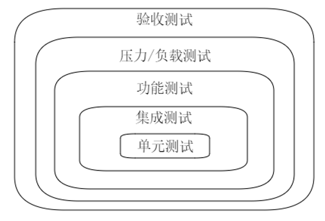
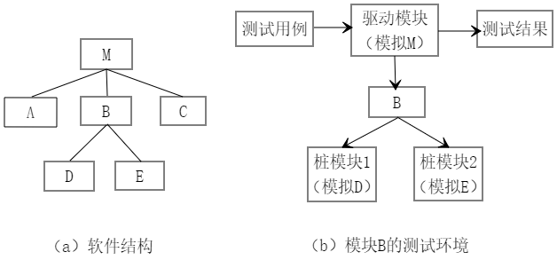
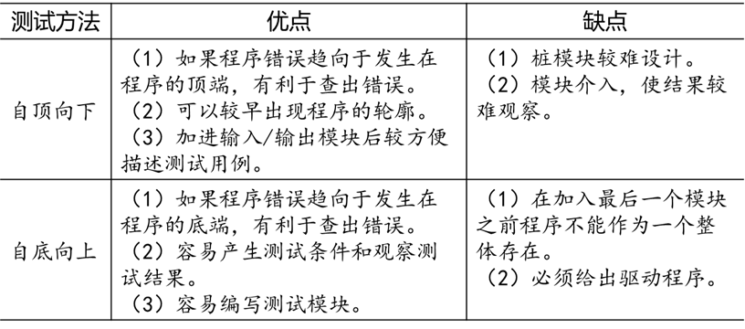
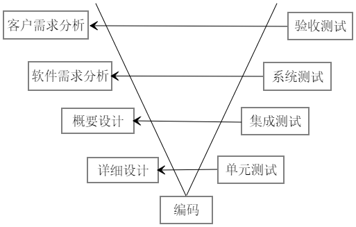
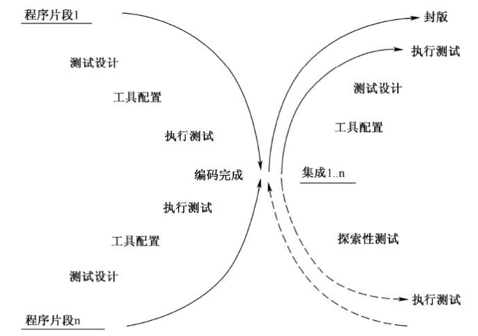

软件测试基础
[TOC]
概述
什么是软件
根据 IEEE 的定义，软件由计算机程序、规程、文档和运行所需的数据组成，这些要素构成了软件工程过程中的各种配置。
软件特征
（1）软件是逻辑产品，不是物理产品，所以软件具有和硬件完全不同的特征。
- 软件是由开发产生，不是用传统方法制造的；
- 软件不会像硬件那样有磨损；
- 软件不能通过已有构件组装，只能自己定义。
（2）当前软件分为七大类：
- 系统软件
- 应用软件
- Web 应用软件
- 工程和科学软件
- 嵌入式软件
- 产品线软件
- 人工智能软件
（3）软件工程是一种层次化技术。
- 软件工程的根基在于对质量的关注。
- 软件工程的过程层是基础。过程层定义了关键过程区域的框架，确立上下各区域的关系，并规定了采用的技术方法，产生的工程产品，建立里程碑，质量保证以及管理变化。
- 软件工程的方法层涵盖一系列任务，如需求分析、设计、编程、测试、维护。
- 软件工程的工具层对过程层和方法层提供自动、半自动的支持。
（4）软件质量
生产高质量的软件是我们的首要目标。
IEEE 关于软件质量的定义：
- 系统、部件或者过程满足规定需求的程度。
- 系统、部件或者过程满足顾客或者用户需要或期望的程度。
各类软件综合起来可以看到 $6$ 个主要特征：
- 功能性：软件实现的功能达到要求的和隐含的用户需求以及设计规范的程度。
- 可靠性：软件在指定条件和特定时间段内维持性能的能力程度。
- 易使用性：用户使用该软件所付出的学习精力。
- 效率：在指定条件下软件功能与所占资源之间的比值。
- 可维护性：当发现错误、运行环境改变或客户需求改变时程序能修改的容易程度。
- 可移植性：将软件从一种环境移入另一种环境的容易程度。
软件测试
（1）软件测试是保证软件质量的关键步骤，是对软件规格说明、设计和编码的最后复审。
（2）软件测试工作可以这样概括：
- 测试执行、模拟一个系统或者程序的操作；
- 测试在于带着发现问题和错误的意图来分析程序；
- 测试能够度量程序的功能和质量；
- 测试在于评价程序和项目工作产品的属性、能力，并且评估是否获得了期望。
（3）软件测试的方法
软件测试技术可以从不同角度加以分类。
从是否需要执行被测软件的角度分为静态测试和动态测试；
从是否针对系统的内部结构和具体实现算法的角度分为白盒测试和黑盒测试。
1.静态测试
静态测试无需执行被测代码，而是借助专用的软件测试工具评审软件文档或程序，度量程序静态复杂度，通过分析或检查源程序的文法、结构、过程、接口等来检查程序的正确性，借以发现程序的不足之处来减少错误概率。
静态测试包含的内容如下：
- 代码检查
- 静态结构分析：主要以图形的方式表现程序的内部结构，例如函数调用关系图、函数内部控制流图。
- 代码质量度量
- 动态测试
动态测试通过人工或使用工具运行程序，使被测代码在相对真实的环境下运行，从多角度观察程序运行时能体现的功能、逻辑、行为、结构等行为，并通过检查、分析程序的执行状态、程序的外部表现来定位程序的错误。
动态测试由三部分组成：
- 功能确认和接口测试
- 覆盖率分析
- 性能分析
- 黑盒测试
也称为功能测试，是已知软件所需功能，通过测试来检测每个功能是否都能正常使用。
黑盒测试方法主要有等价类划分、边值分析、因果图、错误推测等。
该方法着眼于程序外部结构，不考虑内部逻辑结构，针对软件界面和软件功能进行测试。黑盒测试方法是穷举输入测试，只有把所有可能的输入都作为测试情况使用，才能查出程序中所有的错误。
- 白盒测试
也称结构测试或逻辑驱动测试，知道软件内部的工作过程，可通过测试来检测软件产品内部的动作是否按照规格说明书的规定正常进行，并且按照程序内部的结构测试程序来检验程序中的每条通路是否都能按照预定要求正确工作，而不考虑功能是否正确。
白盒测试方法主要有逻辑覆盖、域测试、路径测试、程序插桩、程序变异等。
- 灰盒测试
介于白盒与黑盒之间，关注输出对于输入的正确性，同时也关注内部表现。但这种关注不像白盒那样详细完整，只是通过一些表征性的现象、标志来判断内部的运行状态。
如果每次都通过白盒测试来操作，效率会很低，所以需要灰盒测试。
专业术语
- HLD（High level Document）：概要设计说明书。
- LLD（Low level Document）：详细设计说明书。
- SRS（Software Requirements Specification）：需求规格说明书。
软件测试
软件测试的核心是测试数据生成。
软件测试的实质是根据软件开发各阶段的规格说明和程序的内部结构精心选取一批测试数据，形成测试用例，并用这些测试用例去驱动被测程序，验证所得结果与预期结果是否一致。
目的
- 测试是程序的执行过程，目的在于发现错误；
- 一个好的测试用例在于能发现至今未发现的错误；
- 一个成功的测试用例是发现了至今未发现的错误的测试。
测试一般不可能发现程序中的所有错误，测试只能证明程序中存在错误，但不能证明程序中不存在错误。
原则
在整个开发过程中要尽早地和不断地进行软件测试。
不应把软件测试仅仅看作是软件开发的一个独立阶段，而应当贯穿到软件开发的各个阶段中。
在开始测试时不应默认程序中不存在错误。
在设计测试用例时要给出测试的预期结果。
一个测试用例必须包括两部分：对程序输入数据的描述和由这些输入数据应产生的输出结果的精确描述。
测试工作应避免由开发人员来承担。
从心理学上讲，让一个人否定自己所做的工作是一件沮丧的事情。另外，如果程序中包含了由于程序员对程序功能的误解而产生的错误，当程序员测试自己的程序时，往往还会带着同样的误解而使错误难以发现。
对合理的和不合理的输入数据都要进行测试。
为了提高程序的可靠性。合理的输入数据可以验证程序的正确性，而不合理的输入数据是指异常的、临界的、可能引起问题异变的输入数据。事实上，用户往往会不遵循合理的输入要求而进行一些非法的输入，如果系统不能对此做出正确反应，系统将很容易产生故障，甚至造成系统瘫痪。
重点测试错误群集的程序区段。
除检查程序功能是否完备外还要检查程序功能是否有多余。
用穷举测试是不可能的。
长期完整地保留所有的测试用例和测试文件，直到该软件产品被废弃为止。
因为测试不是一次完成的，在测试出错误并修改后需要继续测试。另外，以后进行维护时也需要这些测试文件进行后续测试。测试文件包括测试数据集、预期的结果、程序执行的记录等。
软件测试的种类
在进行软件测试时需要以下 3 类信息：
- 软件配置：指需求说明书、设计说明书和源程序等。
- 测试配置：指测试方案、测试用例和测试驱动程序等。
- 测试工具：指计算机辅助测试的有关工具。
通常综合测试分为 4 个步骤：
- 单元测试（Unit Testing）
- 集成测试（Integrated Testing）
- 系统测试（System Testing）
- 验收测试（Acceptance Testing）
另外，在所有测试过程中始终贯穿着回归测试（Regression Testing）。

单元测试
定义
单元测试指对软件中的最小可测试单元或基本组成单元进行检查和验证。
单元测试中选取的单元应可以清晰地与其他单元区分开，在某种意义上，单元的概念已经扩展为组件(Component)。
一般遵循以下单元选取原则：
- 对于 C 语言这类面向过程的开发语言来说，单元常指一个函数或子过程。在特殊情况下，如果几个函数具有强耦合性，导致函数关系非常密切，应将这几个函数共同作为一个单元来测试。
- 对于 C++、Java 语言或 C# 等面向对象的开发语言来说，单元一般指一个类。然而某些基础类可能非常庞大，涉及大量属性和方法，甚至需要几个开发人员来编码完成，此时的测试应上升到集成测试的层面。
- 在图形化软件中，单元常指一个窗体或一个菜单。
总之，单元是人为规定的最小的被测功能模块。而单元测试则是一小段代码，用于检测被测代码的一个很小的、很明确的功能是否正确。
测试内容
接口测试
接口测试指对通过被测模块的数据流进行测试检查数据能否正确地输入和输出，主要对模块接口的以下方面进行测试：
- 输入的实参与形参在个数、属性、量纲和顺序上是否匹配；
- 被测模块调用其他模块时传递的实参与被调用模块的形参是否匹配；
- 调用标准函数时传递的实参在个数、属性、量纲和顺序上是否正确；
- 是否存在与当前入口点无关的参数引用；
- 是否修改了只做输入用的只读形参；
- 全局变量在每个模块中的定义是否一致；
- 是否将某些约束条件作为形参来传递。
局部数据结构测试
局部数据结构是最常见的缺陷来源，检查局部数据结构可以保证临时存储在模块内的数据在代码执行过程中是正确的和完整的。应考虑以下方面：
- 是否存在不正确、不一致的数据类型说明；
- 是否存在未初始化或未赋值的错误；
- 变量是否存在初始化或默认值错误；
- 是否存在变量名拼写或书写错误；
- 是否存在不一致的数据类型；
- 是否出现上溢、下溢或地址异常。
重要执行路径测试
对重要执行路径和循环的测试是最常用、最有效的测试技术，以发现因错误的计算、错误的比较和不适当的控制流而导致的缺陷。
常见的错误计算如下：
- 操作符优先次序是否被正确理解；
- 是否存在混合模式的计算；
- 是否存在被零除的风险；
- 运算精度不够；
- 变量的初值是否正确；
- 表达式的符号是否正确。
常见的比较和控制错误如下：
- 是否存在不同数据类型变量之间的比较；
- 是否存在错误的逻辑运算符或优先次序；
- 是否存在因计算机表示的局限性导致浮点运算精度不够，致使期望值与实际值不相等的两值比较；
- 在关系表达式中是否存在错误的变量和比较符；
- 是否存在不可能的循环终止条件导致死循环；
- 是否存在迭代发散导致不能退出；
- 是否错误地修改了循环变量，导致循环次数多一次或少一次。
错误处理测试
完善的设计应能预见各种出错条件，并设置适当的出错处理，以提高系统的容错能力，保证逻辑的正确性。
应考虑以下方面：
- 输出的出错信息是否难以理解；
- 出错描述提供的信息是否不足，导致无法对错误进行定位；
- 显示的错误是否与实际遇到的缺陷不符合；
- 对错误条件的处理是否正确；
- 在程序自定义的出错处理运行之前缺陷条件是否已经引起系统干预。
边界条件测试
程序最容易在边界上出错，应注意以下方面：
- 输入/输出数据的等价类边界；
- 选择条件和循环条件的边界；
- 复杂数据结构的边界。
测试方法
在对模块进行测试时，每个模块在整个软件系统中不是孤立的，不能独立运行，而需要由其他模块来调用和驱动，模块的执行还依赖被它调用的下级模块。因此，为了模拟模块与它周围模块的关系，需要设计辅助测试模块。
辅助测试模块分为以下两种：
- 驱动模块（Driver）：用来模拟被测模块的上级调用模块，功能比真正的上级模块简单得多，仅仅是接受测试数据，并向被测模块传送测试数据，启动被测模块，回收并输出测试结果。
- 桩模块（Stub）：用来模拟被测模块在执行过程中所要调用的模块，接受被测模块输出的数据并完成它所指派的任务。
图（a）表示被测软件的结构，图（b）表示用驱动模块和桩模块建立的测试模块 B 的环境。

驱动模块和桩模块的编写会给软件开发带来额外开销，而且不必和最终的软件一起提交，因此在保证测试质量的前提下尽量避免开发驱动模块和桩模块。当测试单元较简单时，可以直接与被测模块放在一起执行测试；当测试单元较复杂时，最好利用驱动模块或桩模块构建测试环境运行程序。
测试技术
用于单元测试的主要技术如下：
静态测试
静态测试是指不运行被测程序本身，仅通过分析或检查源程序的语法、结构、过程、接口等来检查程序的正确性。静态测试的结果可用于进一步的查错，并未测试用例选取提供指导。
白盒测试
白盒测试也称结构测试或逻辑驱动测试，是按照程序内部的结构测试程序，通过测试来检测产品内部动作是否按照设计规格说明书的规定正常进行，检验程序中的每条通路是否都能按预定要求正确工作。
白盒测试的原则如下：
（1）每条语句至少执行一次；
（2）每个判定的每个分支至少执行一次；
（3）每个判定的每个条件应取到各种可能的值；
（4）每个判定中各条件的每一种组合至少出现一次；
（5）每一条可能的路径至少执行一次。
状态转换测试
被测单元可能具有多个不同的状态，在某些条件下状态会互相转换。状态转换测试就是要模拟使状态发生转换的各种用户操作场景，以及通过一些非正常技术手段来校验不允许发生的状态转换。
功能测试和非功能测试
功能测试就是对产品的各功能进行验证，根据产品特征、操作描述和用户方案测试一个产品的特性和可操作性行为，以确定它们满足设计需求。
非功能测试指在必要时对单元的性能（如系统响应时间、外部接口响应时间、CPU 的使用、内存使用的相容性）等方面进行测试。
集成测试
定义
集成测试是在单元测试的基础上将所有已通过单元测试的模块按照概要设计的要求组装成子系统或系统。
进行集成测试的目的是确保各单元模块组合在一起能够按照既定意图协作运行，并确保增量的行为正确。不经过单元测试的模块不应该进行集成测试，否则将对集成测试的效果和效率带来巨大的影响。
测试内容
集成测试的内容包括模块之间的接口以及集成后的功能，使用黑盒测试方法测试集成的功能，并对以前的集成进行回归测试。具体来说，集成测试包括以下内容：
- 将各模块连接起来时穿越模块接口的数据是否会丢失；
- 各子功能组合起来能否达到预期要求的父功能；
- 模块的功能是否会对其他模块的功能产生不利影响；
- 全局数据结构是否有问题，是否会被异常修改；
- 单个模块的误差积累起来是否会放大到不可接受的程度。
测试方法
非增量式集成测试方法
基本思路是首先将各模块独立地进行单元测试，然后把所有模块组装在一起进行测试，最终得到一个符合要求的软件系统。
这种方法容易出现混乱，因为测试时可能发现一大堆错误，为每个错误进行定位和纠正非常困难，并且改正一个错误同时又可能引入新的错误。
增量式集成测试方法
基本思路是首先将各模块独立地进行单元测试，然后将这些模块逐步组装成较大的系统，边组装边测试，以发现在组装时产生的错误，最终组装成一个符合要求的软件系统。
按照不同的次序实施，有下面两种测试策略：
自顶向下增量式集成测试
该测试方法是按照程序结构图，首先利用桩模块测试主模块，通过测试后用实际的模块替代桩模块进行测试，重复以上步骤，直至替代了所有的桩模块。
在测试过程中，决定模块测试次序的基本原则如下：
（1）尽早测试关键的模块，即比较重要、比较复杂的可能出错或含有新算法的模块；
（2）尽早测试包含输入、输出功能的模块。
自底向上增量式集成测试
该测试方法是按照程序结构图，首先利用驱动模块测试最底层模块，通过测试后用实际的模块替代驱动模块进行测试，重复以上步骤，直至替代了所有的驱动模块。
在测试过程中，决定测试次序的基本原则是该模块的所有下级模块都被测试过了。
两种测试方法的比较：

测试技术
集成测试主要是测试软件的结构问题，因为测试建立在模块的接口上，所以多为黑盒测试，适当辅以白盒测试。
集成测试一般覆盖的区域包括以下几个：
- 从其他关联模块调用一个模块；
- 在关联模块间正确传输数据；
- 关联模块间的互相影响；
- 模块间接口的可靠性。
执行集合测试应遵循下面的方法：
（1）确认组成一个完整系统的模块之间的关系；
（2）评审模块之间的交互、通信需求，确认出模块间的接口；
（3）使用上述信息产生一套测试用例；
（4）采用增量式测试，直到所有模块被功能集成进来。
系统测试
定义
系统测试是将经过良好的集成测试的软件系统作为整个计算机系统的一部分与计算机硬件、外部设备、支持软件、数据以及人员等其它系统元素结合在一起，在实际使用环境下对计算机系统进行一系列的严格测试，从而发现软件中的潜在缺陷。
系统测试的最终目的是保证开发人员交付给用户的软件产品能够满足用户的需求，系统测试的测试用例应在实际的用户使用环境下来执行。
测试内容
几类常用的系统测试：
功能测试
也称确认测试，根据软件需求规格说明书来检验被测系统是否满足用户的功能使用要求。
功能测试是系统测试中最基本的测试。
性能测试
性能测试检测软件运行时的性能，为记录软件的运行性能，经常需要安装必要的测试仪表或软件。
强度测试
强度测试检查系统能力的最高实际限度，即软件在一些超负荷情况下的运行情况。
可靠性测试
通常使用几个指标来度量系统的可靠性：平均无故障时间是否超过规定的时限、因故障而停机的时间在一年中不应超过多少时间等。
恢复测试
主要目的是检查系统的容错能力，可以采用人工干预方式。如果系统本身能够自动恢复，则应检查重新初始化、数据恢复和重新启动等机制是否正确。
安装测试
目的是找出那些在安装过程中出现的错误，而不是软件故障。
安全性测试
目的在于检查系统对非法入侵的防范能力。
理论上说没有不可进入的系统，因此系统安全设计的准则是使非法入侵的代价超过被保护信息的价值。
配置测试
操作系统、数据库管理系统以及信息交换系统等都是在许多硬件配置支持下工作的，如何保证软件在其设计和连接的硬件上正常工作是配置测试的工作目标。配置测试是用各种硬件和软件平台以及不同设置检查软件操作的过程，以保证测试的软件可以使用尽可能多的硬件组合。
可用性测试
可用性测试检测用户对所使用软件是否满意，具体体现为操作是否方便、用户界面是否友好等。
优秀的用户界面包括下面 7 个要素：符合标准和规范、直观性、一致性、灵活性、舒适性、正确性、实用性。
兼容性测试
检测软件之间能否正确地交互和共享信息，它是用其他软件检查软件操作的过程。
网站测试
一般来说包括以下几方面：文字测试、链接测试、图形测试、表单测试、动态内容测试、数据库测试、服务器性能和加载测试、安全性测试。
测试技术
完全采用黑盒测试技术。
验收测试
定义
验收测试是一种合格性测试，也称确认测试，是以用户为主，软件开发人员、实施人员和质量保证人员共同参与的测试。验收测试让软件用户决定是否接受产品，是一项确定产品是否能够满足合同或用户所规定需求的测试。
测试内容
- 明确规定验收测试通过的标准；
- 确定验收测试方法；
- 确定验收测试的组织和可利用的资源；
- 制订验收测试计划，并进行评审；
- 设计验收测试的测试用例；
- 执行验收测试；
- 分析测试结果，决定是否验收。
测试技术
完全采用黑盒测试技术。
多采用称为 $\alpha,\beta$ 测试的过程。
$\alpha$ 测试
对一个早期的、不稳定的软件版本你进行验收测试。
$\beta$ 测试
对一个晚期的、更加稳定的软件版本进行验收测试。
回归测试
定义
回归测试是指修改了旧代码后重新进行测试以确认修改没有引入新的错误或导致其他代码产生错误。
回归测试作为软件生命周期的组成部分，在整个软件测试过程中占有很大的比重，软件开发的各个阶段都会进行多次回归测试。
测试策略
为了高效进行回归测试，需要对测试用例库进行维护，并依据一定的策略，选择相应的回归测试包。
测试用例库的维护
软件在其生命周期中会频繁地被修改和推出新版本，新版本软件会添加一些新的功能。
测试用例的维护包括以下方面：
（1）删除过时的测试用例；
（2）改进不受控制的测试用例，使其达到可重复和可控制的要求；
（3）删除冗余的测试用例；
（4）增添新的测试用例。
回归测试包的选择
软件生命周期中，即使一个得到良好维护的测试用例库也可能变得相当大，所以有时不得不选择一个缩减的回归测试包来完成测试。
常用的选择回归测试包的方式：
- 再测试全部用例：比较安全，但成本最高。
- 基于风险选择测试：基于一定的风险标准优先运行最关键的、可疑的测试。
- 基于操作剖面选择测试
- 再测试修改的部分
测试过程
（1）识别出软件中被修改的过程；
（2）从原基线测试用例库 $T$ 中排除所有不再适用的测试用例，建立一个新的基线测试用例库 $T_0$；
（3）依据一定策略从 $T_0$ 中选择测试用例，测试被修改的软件；
（4）如果有必要，生成新的测试用例集 $T_1$，用于测试 $T_0$ 无法充分测试的软件部分。
测试技术
一般采用黑盒测试来测试软件的高级需求，也可能采用非功能测试来检查系统的增强或扩展是否影响了系统的性能特性，以及与其它系统间的互操作性和兼容性问题。
错误猜测在回归测试中是很重要的，主要来自于经验。
敏捷测试
敏捷开发
敏捷开发的最大特点是高度迭代，有周期性，并且能够及时、持续地响应客户的频繁反馈。
敏捷测试即不断修正质量指标，正确建立测试策略，确认客户的有效需求得以实现。
敏捷测试是遵循敏捷宣言的一种测试实践。
（1）强调从客户的角度来测试系统；
（2）重点关注持续迭代地测试新开发的功能；
（3）尽早开始测试。
测试驱动开发
测试驱动开发（Test-driven development,TDD）是一种软件开发过程中的应用方法，倡导先写测试程序，然后编码实现其功能。测试驱动开发的目的是取得快速反馈并使用“illustrate the main line”方法来构建程序。
带两顶帽子的开发方式：先戴上实现功能的帽子，在测试的辅助下快速实现其功能；再带上重构的帽子，在测试的保护下去除冗余代码。
基本思想是在开发功能代码之前先编写测试代码，然后只编写使测试通过的功能代码，从而以测试来驱使整个开发过程的进行。
测试驱动开发的基本过程如下：
（1）快速新增一个测试；
（2）运行所有的测试，发现新增的测试不能通过；
（3）做一些改动，尽快让测试程序可运行，为此可以在程序中使用一些不合情理的方法；
（4）运行所有测试，并且全部通过；
（5）重构代码，消除重复设计，优化设计结构。
生命周期测试 & 软件开发模型 & 软件测试模型
在软件生命周期中，测试过程贯穿于软件开发生命周期的每个阶段。
软件开发生命周期
- 需求分析
- 设计
- 编码
- 测试
- 安装
- 维护
软件开发模型
瀑布模型
瀑布模型将软件生命周期划分为制定计划、需求分析、软件设计、程序编写、软件测试和运行维护等六个基本活动，并且规定了它们自上而下、相互衔接的固定次序，如同瀑布流水，逐级下落。
理想化的瀑布模型如下：

这是一种经典模型，提供了软件开发的基本框架，适合需求易于完善定义且不易变更的软件系统。
实际的瀑布模型是带“反馈环”的，如下图所示：

瀑布模型是文档驱动的模型，遵守这个约束可使软件维护变得容易一些，从而显著降低软件预算。
优点:
- 各阶段划分清晰；
- 强调计划与需求分析；
- 适合需求稳定的产品开发。
缺点:
- 各个阶段的划分完全固定，阶段之间产生大量的文档，极大地增加了工作量；
由于开发模型是线性的，用户只有等到整个过程的末期才能见到开发成果，增加了开发的风险；
早期的错误可能要等到开发后期的测试阶段才能发现，进而带来严重的后果；
- 最终产品往往反映用户的初始需求而不是最终需求，不适合需求模糊或需求经常变动的系统；
快速原型模型
快速原型是快速建立起来的可以在计算机上运行的程序，它所能完成的功能往往是最终产品能完成的功能的一个子集。
快速原型模型是增量模型的另一种形式，在开发真实系统之前，迅速建造一个可以运行的软件原型 ，以便理解和澄清问题，在该原型的基础上，逐渐完成整个系统的开发工作。

优点：
克服瀑布模型的切点，减少由于软件需求不明确带来的开发风险，互动性更高更容易了解客户需求。
缺点：
- 所选用的开发技术和工具不一定符合主流的发展 ；
- 快速建立起来的系统结构加上连续的修改可能会导致产品质量低下。
增量模型
使用增量模型开发软件时，把软件产品作为一系列的增量构件来设计、编码、集成和测试。每个构件由多个相互作用的模块构成，并且能够完成特定的功能。使用增量模型时，第一个增量构件往往实现软件的基本需求，提供最核心的功能。
把软件产品分解成增量构件时，唯一必须遵守的约束条件是，当把新构件集成到现有构件中时，所形成的产品必须是可测试的。

适合技术风险较大、用户需求较稳定的软件系统。
螺旋模型
螺旋模型最大的特点在于引入了其他模型不具备的风险分析，使软件在无法排除重大风险时有机会停止，以减小损失。
螺旋模型是快速原型模型以进化的开发方式为中心，在每个项目阶段使用瀑布模型法。该模型的每一个周期都包括需求定义、风险分析、工程实现和评审 4 个阶段，由这 4 个阶段进行迭代。
简化的螺旋模型：

适合需求难以获取和确定、软件开发风险较大的软件系统。
软件测试模型
V 模型
$V$ 模型是在瀑布模型的基础上发展而来的，如下图所示：

在软件编码完成前，系统测试用例、软件测试用例以及单元测试用例已经完成。
优点：
- $V$ 模型开发流程将代码实现放在最后一步，即使客户需求发生变更也能很快做出修改，相比瀑布模型减少了回溯的成本和时间；
- 明确标注了测试过程中存在不同的测试类型，明确表示出了开发阶段与测试各阶段的对应关系。
缺点：虽然测试尽早的进入到开发阶段，但是真正进行软件测试是在编码之后，这样忽视了测试对需求分析，系统设计的验证，时间效率上也大打折扣。
W 模型
又称双 V 模型，它由 V 模型演变而来，弥补了 V 模型的不足。左边的 V 是开发的生命周期，右边的 V 是测试的生命周期。

单元测试依据详细设计说明书；
集成测试依据概要设计说明书；
系统测试依据需求规格说明书。
优点：测试与开发是同步进行的，从而有利于尽早地发现问题。
缺点：$W$ 模型是顺序性的，不可逆，需求的变更和调整，依旧不方便。
H 模型
在 $H$ 模型中，软件测试过程活动完全独立，贯穿于整个产品的周期，与其他流程并发地进行。
某个测试点准备就绪时，就可以从测试准备阶段进行到测试执行阶段。
软件测试可以尽早进行。

X 模型
$X$ 模型也是对 V 模型的改进。

$X$ 模型的左边描述的是针对单独程序片段所进行的相互分离的编码和测试，此后将进行频繁的交接，通过集成，最终成为可执行的程序，然后再对这些可执行程序进行测试。己通过集成测试的成品可以进行封装并提交给用户，也可以作为更大规模和范围内集成的一部分。
多根并行的曲线表示变更可以在各个部分发生。
参考资料：
[1] 秦航，杨强 . 软件质量保证与测试(第 2 版)[M] . 北京：清华大学出版社，2017
[2] 赖均，陶春梅，刘兆宏，胡峰 . 软件工程[M] . 北京：清华大学出版社，2016